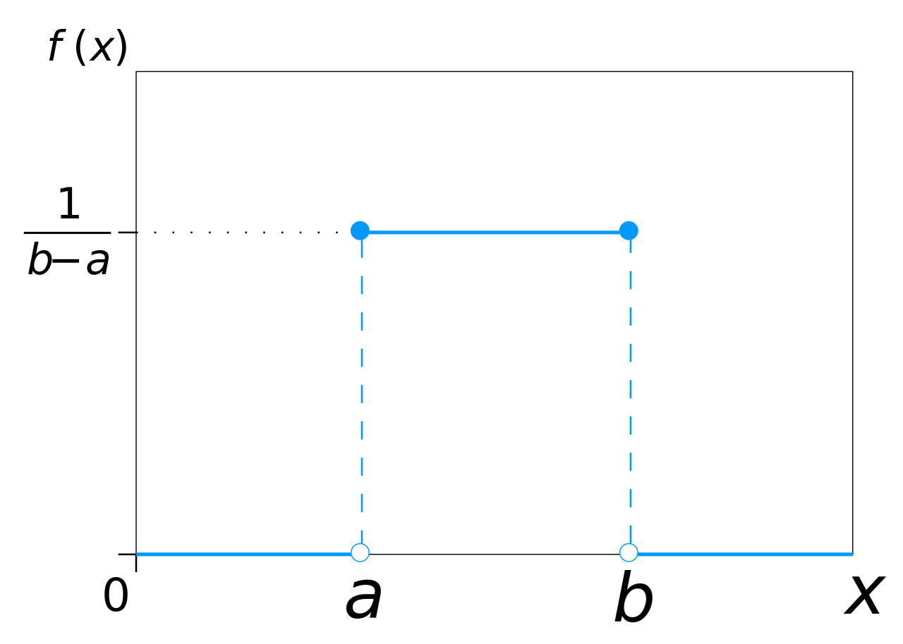

2 Statistics
A probability is a measure of how frequent or likely an event will take place.
2.1 Probability Basics
Probability interpretations
Frequentist: Probability is the fraction of positive samples, if we measured infinitely many samples.
Objectivist: Probabilities are due to inherent uncertainty properties. Probabilities are calculated by putting outcomes of interest into relation with all possible outcomes.
Subjectivist: An agent’s rational degree of belief (not external). The belief needs to be coherent (i.e. if you make bets using your probabilities you should not be guaranteed to lose money) and therefore need to follow the rules of probability.
Bayesian: (Building on subjectivism) A reasonable expectation / degree of belief based on the information available to the statistician / system. It allows to give certainties to events, where we don’t have samples on (e.g. disappearance of the south pole until 2030).
Also the frequentist view is not free of subjectivity since you need to compare events on otherwise similar objects. Usually there are no completely similar objects, so you need to define them.
Probability Space
The probability space is a triplet space containing a sample/outcome space \Omega (containing all possible atomic events), a collection of events S (containing a subset of \Omega to which we want to assign probabilities) and the mapping P between \Omega and S.
Axioms of Probability
The mapping P must fulfill the axioms of probability:
P(a) \geq 0
P(\Omega) = 1
a,b \in S and a \cap b = \{\} \Rightarrow P(a \cup b) = P(a) + P(b)
a, b are events.
Random Variable (RV)
A RV is a function that maps points from the sample space \Omega to some range (e.g. Real numbers or booleans). They are characterized by their distribution function. E.g. for a coin toss: X(\omega) = \begin{cases} 0, \text{ if } \omega = heads\\ 1, \text{ if } \omega = tails. \end{cases}
Proposition
A Proposition is a conclusion of a statistical inference/prediction that can be true or false (e.g. a classification of a datapoint). More formally: A disjunction of events where the logic model holds. An event can be written as a propositional logic model:
A = true, B = false \Rightarrow a \land \neg b. Propositions can be continuous, discrete or boolean.
2.2 Probability distributions
Probability distributions assign probabilities to to all possible points in \Omega (e.g. P(Weather) = \langle 0.3, 0.4, 0.2, 0.1 \rangle, representing Rain, sunshine, clouds and snow). Joint probability distributions give you a probability for each atomic event of the RVs (e.g. P(weather, accident) gives you a 2\times 4 matrix.)
Cumulative Distribution Function (CDF)
The CDF is defined as F_X(x) = P(X \leq x) (See figure CDF).
{kind=link}
Probability Density Function (PDF)
For continuous functions the PDF is defined by p(x) = {d \over dx} p(X \leq x). The probability of x being in a finite interval is P(a < X \leq b) = \int_a^b p(x) dx A PDF is shown in the following figure.

{kind=link}
Properties of Distributions
The expected value (E) or mean (\mu) is given by E[X] = \sum_{x \in X} x*p(x) for discrete RVs and E[X] = \int_X x*p(x) dx for continuous RVs.
The variance measures the spread of a distribution: var[X] = \sigma^2 = E[(X-\mu)^2] = E[X]^2 - \mu^2.
The standard deviation is given by: \sqrt{var[X]} = \sigma. It is interpreted as the deviation from the mean that needs to be expected.
The mode is the value with the highest probability (or the point in the PDF with the highest value):
The median is the point at which all point less than the median and all points greater than the median have the same probability (0.5).
The quantiles (Q) divide the datapoints into sets of equal number. The Q_1 quartile has 25% of the values below it. The interquartile range (IQR) is a measure to show the variability in the data (how distant the points from the first and last quartile are)
Correlation and covariance
Dirac delta function
The dirac delta is simply a function that is infinite at one point and 0 everywhere else: \delta(x)=\begin{cases} \infty , \; \text{ if } x = 0 \\0, \quad \text{if } x \neq 0 \end{cases} \qquad \text{and } \int_{-\infty}^{\infty} \delta(x) dx = 1 (Needed for distributions further on)
Uniform distribution
The uniform distribution has the same probability throughout a specific interval: \text{Unif}(a,b) = \frac{1}{b-a} 1 \mkern-6mu 1 (a < x \leq b) = \begin{cases} \frac{1}{b-a}, \quad \text{if } x \in [ a,b ] \\ 0, \qquad \text{else} \end{cases} 1 \mkern-6mu 1 is a vector of ones.

{kind=link}
Discrete distributions
Used for random variables that have discrete states.
Binomial distribution
Used for series of experiments with two outcomes (success or miss. e.g. a series of coin flips). X \sim \text{Bin}(n, \theta ), \quad \text{Bin}(k|n,\theta)={n \choose k} \theta^k (1-\theta)^{n-k} , \quad {n \choose k} = \frac{n!}{k!(n-k)!}, where n is the number of total experiments, k is the number of successful experiments and \theta is the probability of success of an experiment.
{kind=link}
Bernoulli distribution
Is a special case of the binomial distribution with n=1 (e.g. one coin toss). X \sim \text{Ber}(\theta ), \quad \text{Ber}(x | \theta)=\theta^{1 \mkern-6mu 1 (x=1)} (1-\theta)^{1 \mkern-6mu 1(x=0)}= \begin{cases} \theta, \qquad \text{if } x=1 \\ 1 - \theta, \; \text{if } x=0 \end{cases}
Multinomial distribution
Used for experiments with k different outcomes (e.g. dice rolls: Probability of different counts of the different sides). \text{Mu}(x|n,\theta) = {n \choose x_1, ..., x_K}\prod_{i=1}^K\theta_j^{x_j} = \frac{n!}{x_1!, ..., x_k!}\prod_{i=1}^K\theta_j^{x_j}, where k is the number of outcomes, x_j is the number times that outcome j happens. X = (X_1, ..., X_K) is the random vector.
Multinoulli distribution
Is a special case of the multinomial distribution with n=1. The random vector is then represented in dummy- or one-hot-encoding (e.g. (0,0,1,0,0,0) if outcome 3 takes place). \text{Mu}(x|1,\theta) = \prod_{j=0}^K \theta_j^{1 \mkern-6mu 1(x_j=1)}
Empirical distribution
The empirical distribution follows the empirical measurements strictly. The CDF jumps by 1/n every time a sample is “encountered” (see figure).
\text{p}_{\text{emp}}(A) = \frac{1}{N} \sum_{i=1}^N \delta_{x_i}(A), \quad \delta_{x_i}=\begin{cases}1, \quad \text{if } x \in A \\0, \quad \text{if } x \notin A \end{cases}, w where x_1, ..., x_N is a data set with N points. The points can also be weighted: p(x) = \sum_{i=1}^N w_i \delta_{x_i}(x)
{kind=link}
Continuous distributions
Used for random variables that have continuous states.
Normal/Gaussian distribution
Often chosen for random noise because it is simple and needs few assumptions (see sect. CLT). The PDF is given by:
p(x|\mu\sigma^2)= \frac{1}{\sqrt{2\pi\sigma^2}}\exp\left[-\frac{(x-\mu)^2}{2\sigma^2}\right], where \mu is the mean and \sigma^2 is the variance. The CDF is given by: \Phi(x) = \frac{1}{\sqrt{2\pi}}\int_{\infty}^xe^{\frac{-t^2}{2}dt}
Multivariate normal/Gaussian distribution
For T datapoints with k dimensions (features). The pdf is: p(x|\mu,\Sigma) = \dfrac{1}{\sqrt{(2\pi)^k|\Sigma|}}\exp\left[-\dfrac{1}{2}(x-\mu)^\top\Sigma^{-1}(x-\mu)\right], where x now has multiple dimension (x_1, x_2, ..., x_k) and \Sigma is the k \times k covariance matrix: \Sigma = \text{E}[(X-\mu)(X-\mu)]. The covariance between features is: \text{Cov}[X_i, X_j] = \text{E}[(X_i-\mu_i)(X_j-\mu_j)]
Beta distribution
defined for 0 \leq x \leq 1 (see figure Beta distribution). The pdf is: f(x|\alpha, \beta) = \frac{1}{B(\alpha,\beta)}x^{\alpha-1}(1-x)^{\beta-1} The beta function B is there to normalize and ensure that the total probability is 1 .
{kind=link}
Dirichlet distribution
The multivariate version of the Beta distribution. The PDF is: \text{Dir}({x}|{\alpha}) \triangleq \dfrac{1}{B({\alpha})}\prod\limits_{i=1}^K x_i^{\alpha_i-1},\quad \sum_{i=1}^K x_i =1, \quad x_i \geq 0 \text{ }\forall i

{kind=link}
Marginal distributions
Are the probability distributions of subsets of the original distribution. Marginal distributions of normal distributions are also normal distributions.
{kind=link}
2.3 Central limit theorem
In many cases the sum of random variables will follow a normal distribution as n goes to infinity.
2.4 Bayesian probability
Baeysian probability represents the plausibility of a proposition based on the available information (i.e. the degree at which the information supports the proposition). The use of this form of statistics is especially useful if random variables cannot be assumed to be i.i.d. (i.e. When an event is not independent of the event before it (e.g. drawing balls without laying them back into the urn)).
Conditional/Posterior Probability
Expresses the probability of one event (Y) under the condition that another event (E) has occurred. (e.g. C = “gets cancer”, S = “is a smoker” \rightarrow p(C|S)=0.2, meaning: “given the sole information that someone is a smoker, their probability of getting cancer is 20%.”)
The conditional probability can be calculated like follows. By defining the joined probability like so: P(A \cap B) = P(A \mid B) P(B) you solve for P(A \mid B): P(A \mid B) = \frac{P(A \cap B)}{P(B)}=\frac{P(A, B)}{P(B)}=\alpha{P(A, B)}, where \alpha is used as a normalization constant. If you have hidden variables (confounding factors) you need to sum them out like so: P(Y|E=e)=\alpha P(Y,E=e)=\alpha\sum_h P(Y,E=e,H=h) where X contains all variables, Y is called query variable, E is called evidence variable, H=X-Y-E is called hidden variable or confounding factor. You get the joint probabilities by summing out the hidden variable.
! Usually p(A|B) \neq p(B|A)
! Priors are often forgotten: E.g. P(\text{"COVID-19"}) is confused with P(\text{"COVID-19"}|\text{"Person is getting tested"}) (because only people with symptoms go to the testing station).
! Base rate neglect: Under-representing the prior probability. E.g. You have a test with a 5% false positive rate and a incidence of disease of 2% in the population. If you are tested positive in a population screening your probability of having the disease is only 29%.
Conditional distributions of Gaussian distributions are Gaussian distributions themselves.
Independence
For independent variables it holds: P(A|B)=P(A) or P(B|A)=P(B)
Conditional independence
Two events A and B are independent, given C: P(A|B,C)=P(A|C). A and B must not have any information on each other, given the information on C. E.g. for school children: P(\text{"vocabulary"}|\text{"height"}, \text{"age"})= P(\text{"vocabulary"}|\text{"age"}).
Bayes Rule
Bayes rule is a structured approach to update prior beliefs / probabilities with new information (data). With the conditional probability from before (P(A,B)=P(A|B)P(B)=P(B|A)P(A)) we get Bayes rule by transforming the right-side equation to:P(\text{hypothesis}|\text{evidence}) =\dfrac{P(\text{evidence}|\text{hypothesis})P(\text{hypothesis})}{P(\text{evidence})} often used as: P(\text{model}|\text{data}) =\dfrac{P(\text{data}|\text{model})P(\text{model})}{P(\text{data})}
Terminology:
P(\text{hypothesis}|\text{evidence}) = Posterior (How probable hypothesis is after incorporating new evidence)
P(\text{evidence}|\text{hypothesis}) = Likelihood (How probable the evidence is, if the hypothesis is true)
P(\text{hypothesis}) = Prior (How probable hypothesis was before seeing evidence)
P(\text{evidence}) = Marginal (How probable evidence is under all possible hypotheses)
\dfrac{P(\text{evidence}|\text{hypothesis})}{P(\text{evidence})} = Support B provides for A
P(\text{data}|\text{model})P(\text{model}) = joint probability (P(A,B))
Example for Bayes Rule using COVID-19 Diagnostics
P(\text{COVID-19}|\text{cough}) =\dfrac{P(\text{cough}|\text{COVID-19})P(\text{COVID-19})}{P(\text{cough})} = \frac{0.7*0.01}{0.1}=0.07 Estimating P(\text{COVID-19}|\text{cough}) is difficult, because there can be an outbreak and the number changes. However, P(\text{cough}|\text{COVID-19}) stays stable, P(\text{COVID-19}) and P(\text{cough}) can be easily determined.
2.5 Further Concepts
Convergence in Probability of Random Variables
You expect your random variables (X_i) to converge to an expected random variable X. I.e. after looking at infinite samples, the probability that your random variable X_n differs more than a threshold \epsilon from your target X should be zero. \lim_{n \rightarrow \infty} P(|X_n - X| > \epsilon) = 0
Bernoulli’s Theorem / Weak Law of Large Numbers
\lim_{n \rightarrow \infty} P(|\frac{\sum_{i=1}^n X_i}{n} - \mu| > \epsilon) = 0, where X_1,...,X_n are independent & identically distributed (i.i.d.) RVs. \Rightarrow With enough samples, the sample mean will approach the true mean. The strong law of large numbers states that |\frac{\sum_{i=1}^n X_i}{n} - \mu| < \epsilon for any \epsilon > 0.
2.6 Statistical hypothesis tests
Terminology
Null-hypothesis (over-simplified): “The differences between these two sets of samples are due to chance.” Or “There is no (positive/negative) effect of the independent variables on the dependent variable.”
Alternative hypothesis (over-simplified): “The differences between the two sets of samples cannot be due to chance.” Or “There is a (positive/negative) effect …” (More examples)
P-value: The probability to observe an at least as extreme value (e.g. sample mean of a distribution) as the measured one, if the null-hypothesis was true.
\alpha-Value / Significance level: Probability of falsely rejecting the null-hypothesis, given the null-hypothesis is true.
Statistically significant: The result is significant if p < \alpha.
t-test
Tests for significant difference between two independent sets of samples.
\text{t} = \frac{\bar{X}_1 - \bar{X}_2}{\sqrt{\frac{\hat{\sigma}^2_1}{n_1}+\frac{\hat{\sigma}^2_2}{n_2}}} where \bar{X} is the sample mean, \hat{\sigma}^2 is the sample variance, n is the sample size.
from scipy import stats
stats.ttest_ind(rvs1, rvs2, equal_var=True, alternative = "two-sided")More info: scipy.org
Using the one-ample t-test, you can test if the sample mean (\bar{X}) is significantly different to an expected mean (\hat{\mu}_0).
from scipy import stats
stats.ttest_1samp(rvs, popmean=0.0)More info: scipy.org
The t-test for paired samples is used, when the samples have been matched (e.g. subjects are measured before and after treatment).
from scipy import stats
stats.ttest_rel(rvs1, rvs2, alternative = "two-sided")z-test
Same as t-test, but requires that the standard distribution of the population is known. Therefore it is not used often (except for large sample sizes).
z = \frac{\bar{X} - \mu_0}{\sigma}
Pearson Chi-squared (\chi^2) test
Tests for significant relationships between categorical features. It is used with large sample sizes.
\chi^2 = \sum^n_{i=1} \frac{(O_i - E_i)^2}{E_i} where \chi^2 is the test-statistic, O_i is the number of observations of feature i, E_i (=Np_i) is the expected count of feature i.
To calculate it, you create contingency tables or freqency tables. They contain the frequency of the counts of each combination of variables.
from scipy.stats import chi2_contingency
contingency_table = np.array([[10, 10, 20], [20, 20, 20]])
test_stat, p_val, degOfFreedome, expected_freq = chi2_contingency(contingency_table)table(mtcars$vs, mtcars$gear)
chisq.test(contingency_table)More info: scipy.org
When the sample sizes are smaller, Fisher’s exact test is used. It uses the assumption of fixed marginal distributions.
from scipy.stats import fisher_exact
res = fisher_exact(table, alternative='two-sided')
res.pvalueMore info: scipy.org
contingency_table = table(mtcars$vs, mtcars$gear)
fisher.test(contingency_table)